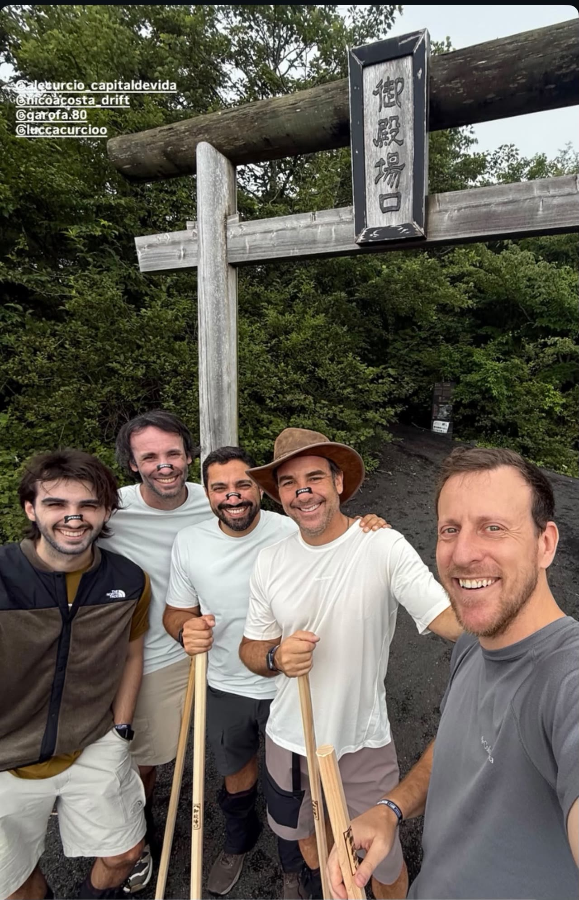

[ 01 ]Aventurero
La montaña y los negocios tienen mucho en común.
Monte Fuji Japón Ruta Gotemba

[ 02 ]Monte Fuji · Japón
Subir con los que importan.
Años después del mar, la montaña. El Monte Fuji, en Japón. Alejandro no subió solo: lo hizo junto a Fernando Montero y su hijo Lucca Curcio.
Una subida compartida entre generaciones y entre un vínculo solidario que trasciende lo deportivo. La misma ruta que conecta a Alejandro con Japón y con el Kaizen — la filosofía de mejora continua que AYAX heredó de casi seis décadas de relación con Toyota.
La montaña y los negocios tienen mucho en común: ambos exigen planificación, resiliencia y la humildad de saber que siempre hay variables fuera de tu control. El liderazgo se forja en la incertidumbre.